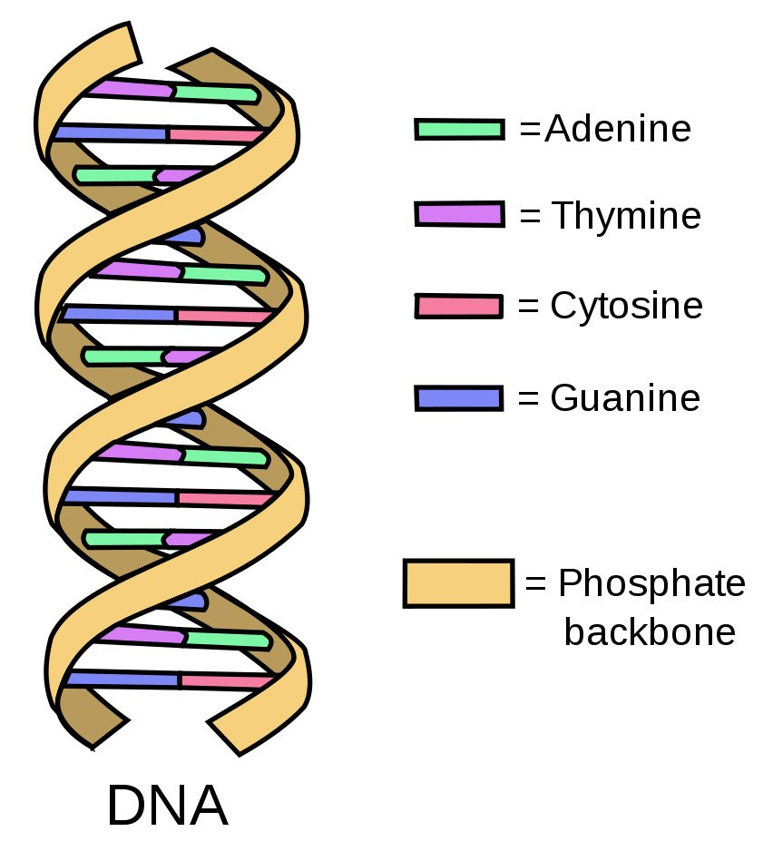
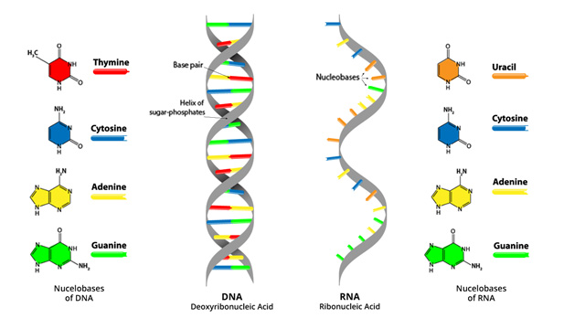
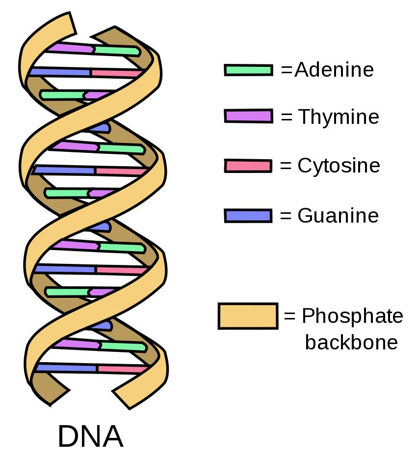
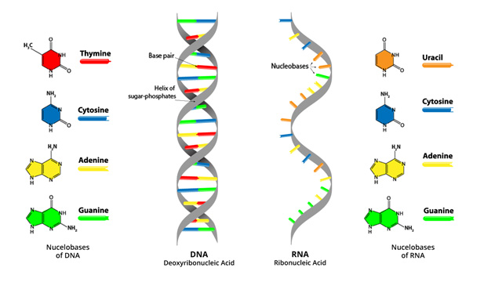

What is a Gene?
A gene is a sequence of DNA which encodes a gene product. They consist of building blocks of life called nucleotides: A, C, G, and T.
 A gene is a sequence of DNA which encodes a gene product. They consist of building blocks of life called nucleotides: A, C, G, and T.
 